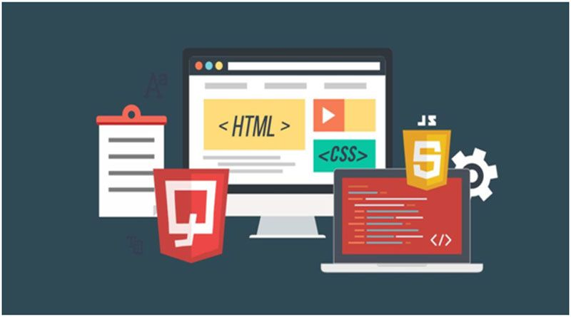
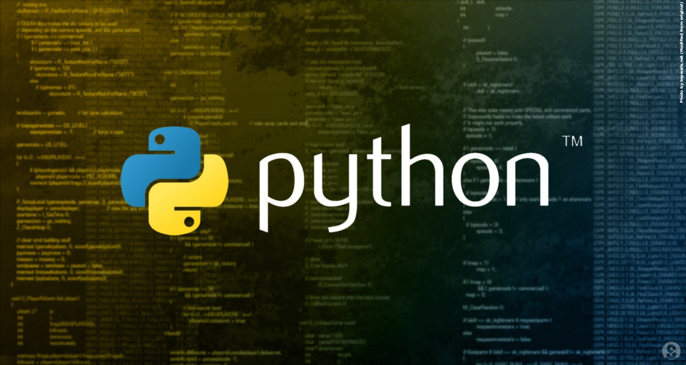

Nossos Cursos
Desenvolvimento de Sistemas

Aprenda a criar sistemas completos desde o zero. Você vai estudar lógica de programação, banco de dados, desenvolvimento web e integração entre front-end e back-end. Ideal para quem quer se tornar um desenvolvedor full stack.
Front-End Web

Domine HTML, CSS e JavaScript para criar interfaces modernas e responsivas. Aprenda a desenvolver sites bonitos, rápidos e adaptados para celulares e desktops.
Banco de Dados
Aprenda a organizar, armazenar e gerenciar dados com SQL. Você vai trabalhar com modelagem de dados, consultas e administração de bancos utilizados no mercado.
Programação em Python

Desenvolva aplicações com uma das linguagens mais usadas do mundo. Aprenda automação, criação de APIs, análise de dados e desenvolvimento rápido com Python.
Desenvolvimento Mobile
Crie aplicativos para Android e iOS. Aprenda conceitos de UI/UX, integração com APIs e publicação de apps nas lojas oficiais.